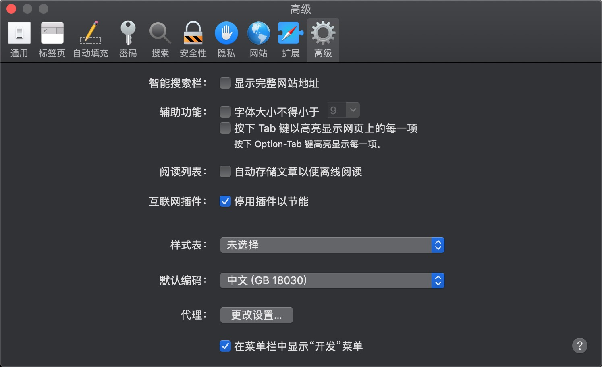

【译】远程调试 iOS Safari
文章目录
如今在移动设备上测试网站变得越来越重要了，我们会经常发现在移动设备的浏览器上面网站会表现 的和桌面浏览器不一样，因此在开发网站时用真机测试变得非常重要。
大多数在桌面电脑的开发服务器都只是在 localhost 中打开一个端口，然后通过 URL http://localhost1234 来访问内容。这种方式在电脑端非常管用，但你不可以把这个 URL 复制到手机端测试。 一种可行（通常都可以）但并不高明的方式是先查找电脑端当前的 IP 地址，然后移动端通过 http://<ip-address-of-desktop>:<port> 来访问网站。
然而，基于电脑端的 IP 地址来调试是非常烦人的，因为这个地址会经常发生变化。这意味着你不能保存该地址到书签中，而且当 IP 地址发生变化的时候，你将会丢失该域下的 数据，如 cookies, localStorage 等等。 然而，有一种简单的方式去解决这个问题， 这种方式只需要设置一次，不会受到 IP 地址变化的影响，甚至不需要数据线！ 你只需要一台 Mac 和 Safari 即可。这个方案可以用在 macOS 10.12（Sierra）， 10.13（High Sierra），10.14（Mojave），可能可以用在更老的 macOS 版本中。
在你的移动设备中打开 localhost:port
先假设你的测试服务器在 localhost 中打开了 8080 端口。在你的电脑端，你当然可以打开 localhost:8080 来访问网网站了。现在我们要让你的移动设备来打开它。实际上，我们不会使用 localhost:<port> 或者 <ip-address>:<port>，因为有一种更好的方式来代替它：计算机名。
你可以在 系统偏好设置 -> 共享 中找到你的计算机名(注意，接下来我会用 <computer-name> 来指定计算机名)。
接下来你需要至少激活一种在列表中共享服务，激活哪个都没所谓。这可能有点蠢，或者你可以激活打印机共享，因为通常只有你会使用到。

现在确保你的 Mac 和 iOS 设备处在同一网络环境中，然后在你的 iOS 设备中打开 http://<computer-name>.local:8080。现在你的网站就会显示在你的 iOS 设备上了！
你还是打不开网站吗？ 看起来你需要设置你的服务器，用 0.0.0.0 代替 localhost （并且允许从 *.local 建立的链接）。把你的 IP 地址改成 0.0.0.0 会让你的服务器可以从外部访问（在同一 WiFi 内）。
如果你正在使用 webpack-dev-server 的话，你只需要稍微改动一下配置就可以了。默认情况下，它会在 localhost 上创建服务器，并且不会允许外部链接（例如通过手机访问）。所以你需要修改一下 webpack dev server 的配置文件（准确来说就是 host 和 allowedHosts 字段）：
|
|
注意我们添加 .local 到 allowedHosts 中，这会让所有 .local 结尾的 host 可以 访问到我们的网站，这样当我们需要共享的时候非常有用。 重启服务器，你的 iOS 设备应该可以正常访问网站了！如果你收到报错信息 invalid host header 的话，那很可能你的计算机名输错了。
实际上同一 WiFi 下的所有 iPhone， iPad，Mac 都可以访问到你开发环境中的网站的，而且 iOS 上的 Firefox 和 Chrome 都可以访问到。然而，你不可以在 Firefox 和 Chrome 中使用远程调试。
远程调试
现在你的手机和平板电脑都可以访问网站了，你可能通过它们来远程调试。设置起来是非常简单的。打开 Safari 的 偏好设置 -> 高级 然后启用 在菜单栏中显示“开发”菜单。

在移动端，启用 设置 -> Safari 浏览器 -> 高级 -> Web 检查器，然后用数据线连接你的 Mac。用移动端的 Safari 打开网站，然后在 Mac 上的 Safari 选择 开发 -> <设备名字> -> <你想调试的 Tab>。如果你是第一次设置的话，那么你需要点击信任设备。
现在所有的设置已经完成了。当你点击 <你想调试的 Tab> 的时候，Mac 上的 Safari 会创建一个调试用的 session，它会允许你在 Mac 的 Safari 中调试 iOS 设备。
远程调试（无数据线）
其实你不需要用数据线连接电脑也可以远程调试移动端的 Safari 的，但这种情况下你需要在 Mac 上安装 Safari Technology Preview，因为当前稳定版的 Safari 并不支持无线远程调试。
重复上面做的事情，用数据线连接电脑然后打开 iOS 上的 Safari。在 Safari Technology Preview 中，确保你已经启用了 在菜单栏中显示“开发”菜单，然后启用 Develop -> <Your mobile Device Name> -> Connect via Network。现在你可以把数据线拔掉，看看 Develop -> <Your mobile Device Name> 是否还显示在 Safari Technology Preview 中。
然后选择你想调试的 Tab 就可以了。Safari Technology Preview 会在 macOS 中建立一条无线连接到 iOS 设备上，这样你就可以在 Mac 上调试 iPhone 和 iPad 了。看，不需要数据线吧。 Happy Testing!
译注
按照我的经验，用 Safari Technology Preview 来无线调试用起来是非常舒服的，但有个致命缺点就是非常不稳定。经常调试着调试着就搜不到设备了。 当出现这种情况的时候，可以试着把Safari Technology Preview 杀掉然后重启，看看能不能找到设备，如果找不到， 就把 iOS 上的 Safari 杀掉再重启，再测试。多试几次通常就能正常调试了。 如果还是找不到，那过一段时间（通常是 5 ～ 10 分钟左右）再打开 Safari Technology Preview 试试。 实在不行又赶着调试的话，还是乖乖插上数据线调试算了。(然而体验过无线调试之后就回不去有线调试了 XD)。
完。
参考资料
文章作者 scarletsky
上次更新 2019-04-30 (95a170d)